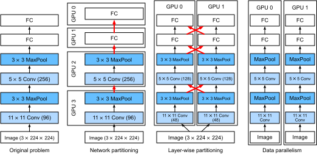
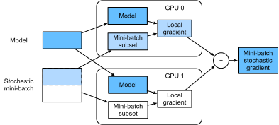

13.5. 多 GPU 训练¶
到目前为止，我们已经讨论了如何在 CPU 和 GPU
上高效地训练模型。我们甚至还在 13.3节
中展示了深度学习框架如何让计算和通信在它们之间自动并行。我们也在
6.7节 中展示了如何使用 nvidia-smi
命令列出一台计算机上所有可用的 GPU。
我们没有讨论的是如何真正实现深度学习训练的并行化。
相反，我们只是顺带暗示：人们可以以某种方式把数据拆分到多个设备上并让它工作起来。本节将补充这些细节，并展示在从零开始的情况下如何并行地训练网络。关于如何利用高级
API 中功能的细节，则留到 13.6节 中讨论。
我们假设读者已经熟悉小批量随机梯度下降算法，例如
12.5节 中描述的那些算法。
13.5.1. 拆分问题¶
让我们从一个简单的计算机视觉问题和一个稍显老旧的网络开始，例如包含多个卷积层、汇聚层，最后可能还有几个全连接层。 也就是说，让我们从一个与 LeNet (LeCun et al., 1998) 或 AlexNet (Krizhevsky et al., 2012) 非常相似的网络开始。 给定多个 GPU（如果是台式机服务器则为 2 个，AWS g4dn.12xlarge 实例上为 4 个，p3.16xlarge 上为 8 个，p2.16xlarge 上为 16 个），我们希望以某种方式划分训练任务，以便获得良好的加速，同时还能受益于简单且可复现的设计选择。毕竟，多个 GPU 会同时提升内存和计算能力。简而言之，给定一个小批量的待分类训练数据，我们有以下几种选择。
首先，我们可以把网络划分到多个 GPU 上。也就是说，每个 GPU 把流入某个特定层的数据作为输入，经过后续若干层处理后，再把数据发送给下一个 GPU。 与单个 GPU 所能处理的数据相比，这使我们能够处理更大的网络。 此外， 每个 GPU 的内存占用可以得到很好的控制（它只是整个网络占用的一部分）。
然而，层（因而 GPU）之间的接口需要紧密的同步。这可能很棘手，尤其是当各层之间的计算负载没有恰当匹配时。GPU 数量很大时，这个问题会进一步加剧。 层之间的接口还需要传输大量数据， 例如激活值和梯度。 这可能压垮 GPU 总线的带宽。 此外，计算密集但又顺序执行的操作很难划分。例如，Mirhoseini et al. (2017) 在这方面进行了最大努力。这仍然是一个困难的问题，目前尚不清楚是否有可能在非平凡问题上实现良好的（线性）扩展。除非有出色的框架或操作系统支持把多个 GPU 串联起来，否则我们不推荐这种做法。
其次，我们可以按层来划分工作。例如，与其在单个 GPU 上计算 64 个通道，我们可以把问题拆分到 4 个 GPU 上，每个 GPU 生成 16 个通道的数据。 同样，对于全连接层，我们可以拆分输出单元的数量。图13.5.1（取自 Krizhevsky et al. (2012)） 展示了这种设计，当时采用该策略是为了应对内存占用非常小（当时只有 2 GB）的 GPU。 只要通道数（或单元数）不太少，这种策略就可以在计算方面获得良好的扩展。 此外， 由于可用内存可以线性扩展，多个 GPU 可以处理越来越大的网络。
图13.5.1 由于 GPU 内存有限，原始 AlexNet 设计中采用的模型并行（model parallelism）。¶
然而， 由于每一层都依赖于所有其他层的结果，我们需要非常大量的同步或屏障操作。 此外，与把层分布到多个 GPU 上相比，需要传输的数据量可能甚至更大。因此，考虑到带宽成本和复杂性，我们不推荐这种做法。
最后，我们可以把数据划分到多个 GPU 上。这样，所有 GPU 都执行相同类型的工作，只是处理的观测不同。在每个小批量训练数据之后，梯度会在各 GPU 之间聚合。 这是最简单的方法，可以应用在任何情形中。 我们只需要在每个小批量之后同步一次。话虽如此，非常理想的是在其余计算仍在进行时就开始交换梯度参数。 此外，GPU 数量越多，小批量大小就越大，从而提高训练效率。 然而，增加 GPU 并不能让我们训练更大的模型。

图13.5.2 在多个 GPU 上并行化。从左到右依次是：原始问题、网络划分、按层划分、数据并行。¶
不同多 GPU 并行化方式的比较如 图13.5.2 所示。 总的来说，只要我们能够使用内存足够大的 GPU，数据并行就是最方便的推进方式。关于分布式训练中划分的详细描述，另见 (Li et al., 2014)。在深度学习发展早期，GPU 内存曾经是一个问题。如今，除了最特殊的情形之外，这个问题已经得到解决。接下来我们重点关注数据并行。
13.5.2. 数据并行¶
假设一台机器上有 \(k\) 个 GPU。对于要训练的模型，每个 GPU 都会独立地维护一整套模型参数，不过各 GPU 之间的参数值相同且保持同步。 例如， 当 \(k=2\) 时，图13.5.3 展示了 使用 数据并行进行训练的情形。

图13.5.3 在两个 GPU 上使用数据并行计算小批量随机梯度下降。¶
一般来说，训练过程如下：
在训练的任何一次迭代中，给定一个随机小批量，我们把该批量中的样例分成 \(k\) 份，并将它们均匀地分配到各个 GPU 上。
每个 GPU 根据分配给它的那部分小批量，计算模型参数的损失和梯度。
把 \(k\) 个 GPU 各自的局部梯度聚合起来，得到当前的小批量随机梯度。
聚合后的梯度会被重新分发到每个 GPU。
每个 GPU 使用这个小批量随机梯度来更新它所维护的整套模型参数。
请注意，在实践中，当使用 \(k\) 个 GPU 训练时，我们会把小批量大小增大到原来的 \(k\) 倍，这样每个 GPU 的工作量就与只在单个 GPU 上训练时相同。在 16 个 GPU 的服务器上，这会大幅增加小批量大小，因此我们可能必须相应地增大学习率。 还要注意，8.5节 中的批量规范化需要调整，例如为每个 GPU 保留单独的批量规范化系数。 接下来，我们将使用一个玩具网络来说明多 GPU 训练。
%matplotlib inline
import torch
from torch import nn
from torch.nn import functional as F
from d2l import torch as d2l
%matplotlib inline
from mxnet import autograd, gluon, np, npx
from d2l import mxnet as d2l
npx.set_np()
13.5.3. 一个玩具网络¶
我们使用 7.6节 中介绍的 LeNet（稍作修改）。我们从头开始定义它，以便详细说明参数交换和同步的过程。
# Initialize model parameters
scale = 0.01
W1 = torch.randn(size=(20, 1, 3, 3)) * scale
b1 = torch.zeros(20)
W2 = torch.randn(size=(50, 20, 5, 5)) * scale
b2 = torch.zeros(50)
W3 = torch.randn(size=(800, 128)) * scale
b3 = torch.zeros(128)
W4 = torch.randn(size=(128, 10)) * scale
b4 = torch.zeros(10)
params = [W1, b1, W2, b2, W3, b3, W4, b4]
# Define the model
def lenet(X, params):
h1_conv = F.conv2d(input=X, weight=params[0], bias=params[1])
h1_activation = F.relu(h1_conv)
h1 = F.avg_pool2d(input=h1_activation, kernel_size=(2, 2), stride=(2, 2))
h2_conv = F.conv2d(input=h1, weight=params[2], bias=params[3])
h2_activation = F.relu(h2_conv)
h2 = F.avg_pool2d(input=h2_activation, kernel_size=(2, 2), stride=(2, 2))
h2 = h2.reshape(h2.shape[0], -1)
h3_linear = torch.mm(h2, params[4]) + params[5]
h3 = F.relu(h3_linear)
y_hat = torch.mm(h3, params[6]) + params[7]
return y_hat
# Cross-entropy loss function
loss = nn.CrossEntropyLoss(reduction='none')
# Initialize model parameters
scale = 0.01
W1 = np.random.normal(scale=scale, size=(20, 1, 3, 3))
b1 = np.zeros(20)
W2 = np.random.normal(scale=scale, size=(50, 20, 5, 5))
b2 = np.zeros(50)
W3 = np.random.normal(scale=scale, size=(800, 128))
b3 = np.zeros(128)
W4 = np.random.normal(scale=scale, size=(128, 10))
b4 = np.zeros(10)
params = [W1, b1, W2, b2, W3, b3, W4, b4]
# Define the model
def lenet(X, params):
h1_conv = npx.convolution(data=X, weight=params[0], bias=params[1],
kernel=(3, 3), num_filter=20)
h1_activation = npx.relu(h1_conv)
h1 = npx.pooling(data=h1_activation, pool_type='avg', kernel=(2, 2),
stride=(2, 2))
h2_conv = npx.convolution(data=h1, weight=params[2], bias=params[3],
kernel=(5, 5), num_filter=50)
h2_activation = npx.relu(h2_conv)
h2 = npx.pooling(data=h2_activation, pool_type='avg', kernel=(2, 2),
stride=(2, 2))
h2 = h2.reshape(h2.shape[0], -1)
h3_linear = np.dot(h2, params[4]) + params[5]
h3 = npx.relu(h3_linear)
y_hat = np.dot(h3, params[6]) + params[7]
return y_hat
# Cross-entropy loss function
loss = gluon.loss.SoftmaxCrossEntropyLoss()
13.5.4. 数据同步¶
为了实现高效的多 GPU 训练，我们需要两个基本操作。
首先，我们需要能够将一组参数分发到多个设备并附加梯度（get_params）。没有参数，就无法在
GPU 上计算网络。 其次，我们需要能够在多个设备上对参数求和，即需要一个
allreduce 函数。
def get_params(params, device):
new_params = [p.to(device) for p in params]
for p in new_params:
p.requires_grad_()
return new_params
def get_params(params, device):
new_params = [p.copyto(device) for p in params]
for p in new_params:
p.attach_grad()
return new_params
让我们试着把模型参数复制到一个 GPU 上。
new_params = get_params(params, d2l.try_gpu(0))
print('b1 weight:', new_params[1])
print('b1 grad:', new_params[1].grad)
new_params = get_params(params, d2l.try_gpu(0))
print('b1 weight:', new_params[1])
print('b1 grad:', new_params[1].grad)
由于我们还没有执行任何计算，偏置参数对应的梯度仍然是零。
现在假设有一个分布在多个 GPU 上的向量。下面的allreduce
函数把所有向量相加，并将结果广播回所有
GPU。注意，为此我们需要把数据复制到负责累加结果的设备上。
def allreduce(data):
for i in range(1, len(data)):
data[0][:] += data[i].to(data[0].device)
for i in range(1, len(data)):
data[i][:] = data[0].to(data[i].device)
def allreduce(data):
for i in range(1, len(data)):
data[0][:] += data[i].copyto(data[0].ctx)
for i in range(1, len(data)):
data[0].copyto(data[i])
让我们在不同设备上创建取值不同的向量并聚合它们，以此来测试一下。
data = [torch.ones((1, 2), device=d2l.try_gpu(i)) * (i + 1) for i in range(2)]
print('before allreduce:\n', data[0], '\n', data[1])
allreduce(data)
print('after allreduce:\n', data[0], '\n', data[1])
data = [np.ones((1, 2), ctx=d2l.try_gpu(i)) * (i + 1) for i in range(2)]
print('before allreduce:\n', data[0], '\n', data[1])
allreduce(data)
print('after allreduce:\n', data[0], '\n', data[1])
13.5.5. 分发数据¶
我们需要一个简单的工具函数，用来将一个小批量均匀地分发到多个 GPU 上。例如，在两个 GPU 上，我们希望把一半数据复制到其中一个 GPU，另一半复制到另一个 GPU。 由于深度学习框架内置的函数更方便、更简洁，我们用它在一个 \(4 \times 5\) 矩阵上试验一下。
data = torch.arange(20).reshape(4, 5)
devices = [torch.device('cuda:0'), torch.device('cuda:1')]
split = nn.parallel.scatter(data, devices)
print('input :', data)
print('load into', devices)
print('output:', split)
data = np.arange(20).reshape(4, 5)
devices = [npx.gpu(0), npx.gpu(1)]
split = gluon.utils.split_and_load(data, devices)
print('input :', data)
print('load into', devices)
print('output:', split)
为了后续复用，我们定义一个 split_batch 函数，它同时切分数据和标签。
#@save
def split_batch(X, y, devices):
"""Split `X` and `y` into multiple devices."""
assert X.shape[0] == y.shape[0]
return (nn.parallel.scatter(X, devices),
nn.parallel.scatter(y, devices))
#@save
def split_batch(X, y, devices):
"""Split `X` and `y` into multiple devices."""
assert X.shape[0] == y.shape[0]
return (gluon.utils.split_and_load(X, devices),
gluon.utils.split_and_load(y, devices))
13.5.6. 训练¶
现在我们可以实现单个小批量上的多 GPU
训练。其实现主要基于本节介绍的数据并行方法。我们将使用刚刚讨论过的辅助函数
allreduce 和 split_and_load，在多个 GPU
之间同步数据。请注意，我们不需要编写任何特定的代码来实现并行。由于计算图在一个小批量内没有任何跨设备的依赖，它会自动并行执行。
def train_batch(X, y, device_params, devices, lr):
X_shards, y_shards = split_batch(X, y, devices)
# Loss is calculated separately on each GPU
ls = [loss(lenet(X_shard, device_W), y_shard).sum()
for X_shard, y_shard, device_W in zip(
X_shards, y_shards, device_params)]
for l in ls: # Backpropagation is performed separately on each GPU
l.backward()
# Sum all gradients from each GPU and broadcast them to all GPUs
with torch.no_grad():
for i in range(len(device_params[0])):
allreduce([device_params[c][i].grad for c in range(len(devices))])
# The model parameters are updated separately on each GPU
for param in device_params:
d2l.sgd(param, lr, X.shape[0]) # Here, we use a full-size batch
def train_batch(X, y, device_params, devices, lr):
X_shards, y_shards = split_batch(X, y, devices)
with autograd.record(): # Loss is calculated separately on each GPU
ls = [loss(lenet(X_shard, device_W), y_shard)
for X_shard, y_shard, device_W in zip(
X_shards, y_shards, device_params)]
for l in ls: # Backpropagation is performed separately on each GPU
l.backward()
# Sum all gradients from each GPU and broadcast them to all GPUs
for i in range(len(device_params[0])):
allreduce([device_params[c][i].grad for c in range(len(devices))])
# The model parameters are updated separately on each GPU
for param in device_params:
d2l.sgd(param, lr, X.shape[0]) # Here, we use a full-size batch
现在，我们可以定义训练函数。它与此前章节中使用的训练函数略有不同：我们需要分配
GPU，并把所有模型参数复制到所有设备上。 显然，每个批量都通过
train_batch 函数来处理，以利用多个
GPU。为了方便（以及代码简洁），我们在单个 GPU
上计算准确率，尽管这样做是低效的，因为其他 GPU 处于空闲状态。
def train(num_gpus, batch_size, lr):
train_iter, test_iter = d2l.load_data_fashion_mnist(batch_size)
devices = [d2l.try_gpu(i) for i in range(num_gpus)]
# Copy model parameters to `num_gpus` GPUs
device_params = [get_params(params, d) for d in devices]
num_epochs = 10
animator = d2l.Animator('epoch', 'test acc', xlim=[1, num_epochs])
timer = d2l.Timer()
for epoch in range(num_epochs):
timer.start()
for X, y in train_iter:
# Perform multi-GPU training for a single minibatch
train_batch(X, y, device_params, devices, lr)
torch.cuda.synchronize()
timer.stop()
# Evaluate the model on GPU 0
animator.add(epoch + 1, (d2l.evaluate_accuracy_gpu(
lambda x: lenet(x, device_params[0]), test_iter, devices[0]),))
print(f'test acc: {animator.Y[0][-1]:.2f}, {timer.avg():.1f} sec/epoch '
f'on {str(devices)}')
def train(num_gpus, batch_size, lr):
train_iter, test_iter = d2l.load_data_fashion_mnist(batch_size)
devices = [d2l.try_gpu(i) for i in range(num_gpus)]
# Copy model parameters to `num_gpus` GPUs
device_params = [get_params(params, d) for d in devices]
num_epochs = 10
animator = d2l.Animator('epoch', 'test acc', xlim=[1, num_epochs])
timer = d2l.Timer()
for epoch in range(num_epochs):
timer.start()
for X, y in train_iter:
# Perform multi-GPU training for a single minibatch
train_batch(X, y, device_params, devices, lr)
npx.waitall()
timer.stop()
# Evaluate the model on GPU 0
animator.add(epoch + 1, (d2l.evaluate_accuracy_gpu(
lambda x: lenet(x, device_params[0]), test_iter, devices[0]),))
print(f'test acc: {animator.Y[0][-1]:.2f}, {timer.avg():.1f} sec/epoch '
f'on {str(devices)}')
让我们看看在单个 GPU 上效果如何。 首先使用 256 的批量大小和学习率 0.2。
train(num_gpus=1, batch_size=256, lr=0.2)
train(num_gpus=1, batch_size=256, lr=0.2)
在保持批量大小和学习率不变的情况下，把 GPU 数量增加到 2 个，可以看到测试准确率与之前的实验大致相同。 就优化算法而言，两者是相同的。遗憾的是，这样做并不能获得有意义的加速：模型实在太小了；此外我们只有一个很小的数据集，而我们这种略显朴素的多 GPU 训练实现方式受到了大量 Python 开销的影响。今后我们会遇到更复杂的模型以及更精细的并行化方法。 尽管如此，还是让我们看看在 Fashion-MNIST 上会发生什么。
train(num_gpus=2, batch_size=256, lr=0.2)
train(num_gpus=2, batch_size=256, lr=0.2)
13.5.7. 小结¶
将深度网络训练拆分到多个 GPU 上有多种方式。我们可以在层与层之间拆分、跨层拆分，或者按数据拆分。前两种方式需要精心编排的数据传输。数据并行是最简单的策略。
数据并行训练很直接。然而，为了提高效率，它会增大有效的小批量大小。
在数据并行中，数据被拆分到多个 GPU 上，每个 GPU 执行自己的前向和反向运算，随后梯度被聚合，结果再被广播回各个 GPU。
对于更大的小批量，我们可能会使用稍大一些的学习率。
13.5.8. 练习¶
当使用 \(k\) 个 GPU 训练时，把小批量大小从 \(b\) 变为 \(k \cdot b\)，即按 GPU 的数量放大。
比较不同学习率下的准确率。它如何随 GPU 数量变化？
实现一个更高效的
allreduce函数，在不同的 GPU 上聚合不同的参数？为什么这样更高效？实现多 GPU 的测试准确率计算。